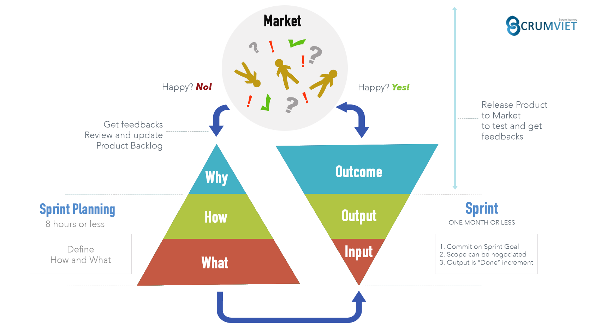
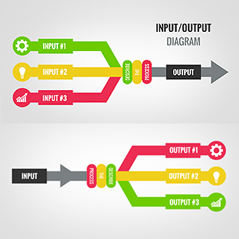

In computing, input/output or I/O (or, informally, io or IO) is the communication between an information processing system, such as a computer, and the outside world, possibly a human or another information processing system. Inputs are the signals or data received by the system and outputs are the signals or data sent from it. The term can also be used as part of an action; to "perform I/O" is to perform an input or output operation.

I/O devices are the pieces of hardware used by a human (or other system) to communicate with a computer. For instance, a keyboard or computer mouse is an input device for a computer, while monitors and printers are output devices. Devices for communication between computers, such as modems and network cards, typically perform both input and output operations.
The designation of a device as either input or output depends on perspective. Mice and keyboards take physical movements that the human user outputs and convert them into input signals that a computer can understand; the output from these devices is the computer's input. Similarly, printers and monitors take signals that computers output as input, and they convert these signals into a representation that human users can understand. From the human user's perspective, the process of reading or seeing these representations is receiving output; this type of interaction between computers and humans is studied in the field of human–computer interaction. A further complication is that a device traditionally considered an input device, e.g., card reader, keyboard, may accept control commands to, e.g., select stacker, display keyboard lights, while a device traditionally considered as an output device may provide status data, e.g., low toner, out of paper, paper jam.
In computer architecture, the combination of the CPU and main memory, to which the CPU can read or write directly using individual instructions, is considered the brain of a computer. Any transfer of information to or from the CPU/memory combo, for example by reading data from a disk drive, is considered I/O.[1] The CPU and its supporting circuitry may provide memory-mapped I/O that is used in low-level computer programming, such as in the implementation of device drivers, or may provide access to I/O channels. An I/O algorithm is one designed to exploit locality and perform efficiently when exchanging data with a secondary storage device, such as a disk drive.
Higher-level implementation
Higher-level operating system and programming facilities employ separate, more abstract I/O concepts and primitives. For example, most operating systems provide application programs with the concept of files. The C and C++ programming languages, and operating systems in the Unix family, traditionally abstract files and devices as streams, which can be read or written, or sometimes both. The C standard library provides functions for manipulating streams for input and output.
In the context of the ALGOL 68 programming language, the input and output facilities are collectively referred to as transput. The ALGOL 68 transput library recognizes the following standard files/devices: stand in, stand out, stand errors and stand back.
An alternative to special primitive functions is the I/O monad, which permits programs to just describe I/O, and the actions are carried out outside the program. This is notable because the I/O functions would introduce side-effects to any programming language, but this allows purely functional programming to be practical.
Channel I/O
Channel I/O requires the use of instructions that are specifically designed to perform I/O operations. The I/O instructions address the channel or the channel and device; the channel asynchronously accesses all other required addressing and control information. This is similar to DMA, but more flexible.
Port-mapped I/O
Port-mapped I/O also requires the use of special I/O instructions. Typically one or more ports are assigned to the device, each with a special purpose. The port numbers are in a separate address space from that used by normal instructions.
Direct memory access
Direct memory access (DMA) is a means for devices to transfer large chunks of data to and from memory independently of the CPU.